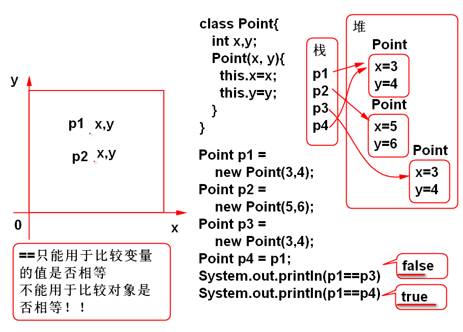

String是不变字符串： 对象不可改变，对象中的字符数组中的数据不可改变。
StringBuilder是可变字符串：对象封装的字符数组中的数据可以改变。
StringBuilder类型的操作性能好于Srting，字符串操作建议使用StringBuilder。 字符串显示使用String。
运行期间字符串连接计算利用StringBuilder的append完成。
案例：
String s = "123";
String ss = s + "abc";
//ss = new StringBuilder(s)
// .append("abc").toString();
案例：
String s = "123"+"456"+"abc";
String ss = "123";
String str = ss + "456"+"abc";
//在一个表达式中出现连续的字符串连接，Java会
//自动的优化为一个StringBuilder对象
//String str = new StringBuilder(ss)
// .append("456").append("abc").toString();
在工作中一个表达式中的连续字符串连接不需要优化为StringBuilder
在反复进行字符串连接时候建议使用StringBuilder
用于声明字符串的规则表达式。
经常用于检测一个字符串是否符合特定规则。
语法：
常见案例：
邮政编码的规则 \d{6}
身份证的规则 d{17}[\dXx]
用户名的规则: 8到11个单词字符 \w{8,11}
检查一个文件是否为jpeg照片文件： .+\.jpe?g
检查一个文件是否为照片文件： .+\.(jpe?g|png|gif)
Excel能够支持的文件名规则 ： .+\.xls[xbm]?
手机号的规则： (0086|\+86)?\s*1\d{10}
用于检测一个字符串整体是否符合指定的正则规则。
案例：
//String reg=".+\\.jpe?g";
String reg=".+\\.(jpe?g|png|gif)";
//正则表达式： .+\.(jpe?g|png|gif)
//Java 字符串: .+\\.(jpe?g|png|gif)
String file = "她.png";
System.out.println(reg);
boolean b = file.matches(reg);
System.out.println(b);
按照一定规则将字符串劈开
String str=
"1, 李洪鹤, 110, lihh@tedu.cn, 北京海淀区";
String[] data=str.split(",\\s*");
// "1", "李洪鹤" ...
System.out.println(data[1]);
replace 替换
String str = "那一年，我去你家，你说我去！"
String reg = "我去";
String s = str.replaceAll(reg, "XXX");
System.out.println(s);
关于Object 的toString方法：
案例重写toString方法：
public class Demo11 {
public static void main(String[] args) {
Foo foo = new Foo();
//调用Object提供的默认toString方法
//返回一个字符串，意义不大
String str = foo.toString();
System.out.println(str);
//调用重写的toString()方法
Goo goo = new Goo();
String s = goo.toString();
System.out.println(s);
//toString的用途：println 等
//很多API会自动的调用toString
//可以简化软件的开发和测试
System.out.println(goo);
}
}
class Foo /*extends Object*/{
}
class Goo{
//重新继承与Object类的toString();
public String toString(){
return "Hello World!";
}
}
案例, 一个有意义的toString重写：
/**
* 一个有意义的toString重写案例
*/
public class Demo12 {
public static void main(String[] args) {
Airplane a1 = new Airplane(5, 7);
a1.move();
a1.move();
a1.move();
//System.out.println(a1.x+","+a1.y);
System.out.println(a1);
a1.move();
a1.move();
a1.move();
//System.out.println(a1.x+","+a1.y);
System.out.println(a1);
}
}
class Airplane{
int x, y;
public Airplane(int x, int y) {
this.x = x;
this.y = y;
}
public void move(){
x++;
y+=2;
}
//重写toString方法后可以简化调试程序
//在程序中使用 System.out.println(plane);
//即可输出对象的数据值
public String toString() {
return x+","+y;
}
}
重写模板：
public boolean equals(Object obj){
//当两个对象的x和y都相等时候则相等
if(obj==null) return false;
if(this==obj) return true;
//使用if语句保护，避免造型异常
if(obj instanceof PointX){
//为了读取x y属性必须造型为子类型
PointX other=(PointX)obj;
return this.x == other.x &&
this.y == other.y;
}
//方法一定返回一个boolean值！
return false;
}
==不能用于比较对象：

案例：
/**
* 测试 重写 equals 方法
*
*/
public class Demo13 {
public static void main(String[] args) {
Point p1 = new Point(3, 4);
Point p2 = new Point(5, 6);
Point p3 = new Point(3, 4);
Point p4 = p1;
//p1和p3引用的对象逻辑上是相等的！
//但是==比较不能反映这个“相等”结果
//== 只能用于比较两个变量相等
//不能用于比较两个对象是否相等
System.out.println(p1==p3);//false
System.out.println(p1==p4);//true
//默认的equals方法也不能对象相等
//必须重新才行！！！
System.out.println(p1.equals(p3));
System.out.println(p1.equals(p4));
PointX p5 = new PointX(3, 4);
PointX p6 = new PointX(3, 4);
System.out.println(p5.equals(p6));//true
System.out.println(p5.equals(null));
}
}
class Point{
int x, y;
public Point(int x, int y) {
this.x = x;
this.y = y;
}
public String toString() {
return x+","+y;
}
}
class PointX{
int x, y;
public PointX(int x, int y) {
this.x = x;
this.y = y;
}
public String toString() {
return x+","+y;
}
//重写equals方法比较两个对象是否相等
public boolean equals(Object obj){
//当两个对象的x和y都相等时候则相等
if(obj==null) return false;
if(this==obj) return true;
//使用if语句保护，避免造型异常
if(obj instanceof PointX){
//为了读取x y属性必须造型为子类型
PointX other=(PointX)obj;
return this.x == other.x &&
this.y == other.y;
}
//方法一定返回一个boolean值！
return false;
}
}
请从SVN下载作业